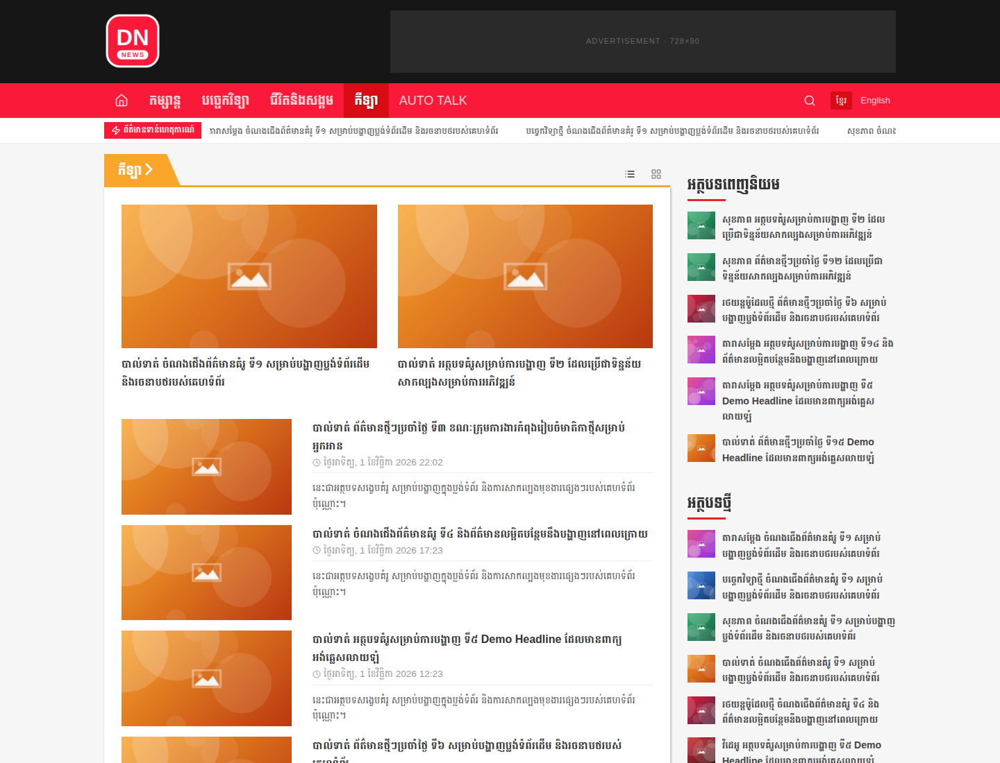
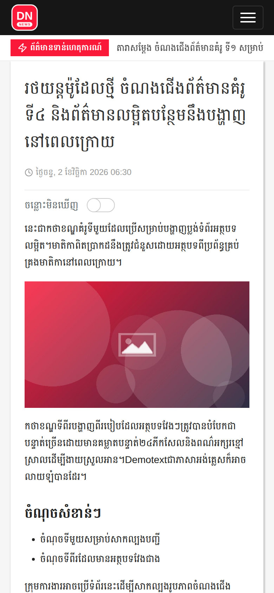

ខ្មែរ+ English
no plugin
no plugin
Secure & accessiblenonces · escaping · skip links · reduced motion
ស
SbekNews Theme
Classic WordPress theme · GPL-2.0
The bilingual news theme for Cambodia.
ព័ត៌មាន ខ្មែរ · English
Hero grid, video and colored category blocks, breaking-news ticker, infinite-scroll archives and a clean article page — with one Theme Option panel to run it all.
WordPress 6.5+
PHP 8.0+
Tailwind CSS v4
Vanilla JS
WP-CLI ready
2Languages, no plugin
11Self-hosted Khmer fonts
8KBCSS, gzipped
4KBJavaScript, gzipped
7Theme Option tabs
140+One-click demo posts